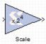

|
|
The Xilinx Scale block scales its input by a power of two. The power can be either positive or negative. The block has one input and one output. The scale operation has the effect of moving the binary point without changing the bits in the containerThe only parameter that is specific to the Scale block is Scale factor s. It can be a positive or negative integer. The output of the block is i*2^k, where i is the input value and k is the scale factor. The effect of scaling is to move the binary point, which in hardware has no cost (a shift, on the other hand, may add logic).